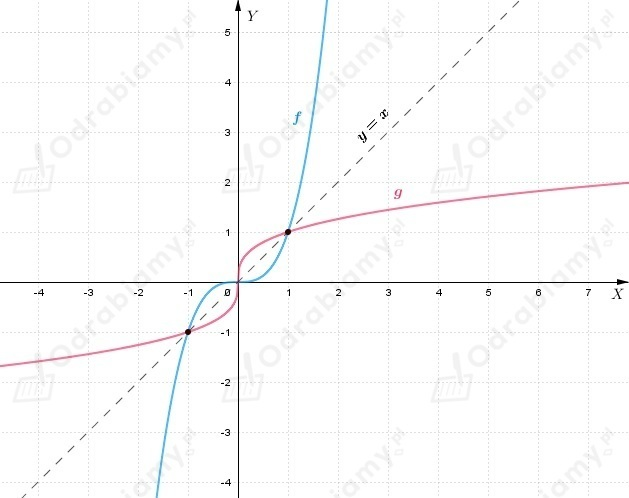

Z treści zadania wiemy, że
Wiemy, że funkcja g jest funkcją odwrotna do funkcji f. Zatem, aby naszkicować wykres funkcji g odbijamy
wykres funkcji f symetrycznie względem prostej y=x.
Naszkicujmy wykres funkcji f, a następnie wykres funkcji g zgodnie z informacją powyżej.
